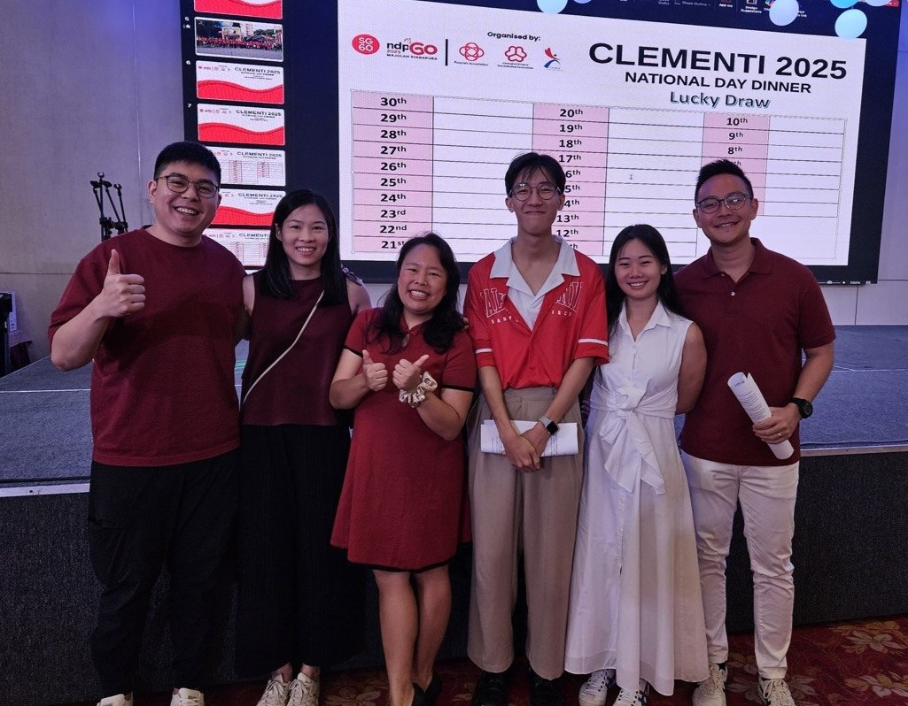

Grassroots Volunteering
I am a grassroots volunteer with the Clementi Peaks resident's network, leveraging my experience in media, hosting and performing to support community shows, carnivals and celebrations.
In 2025, I hosted the community's Back-to-School carnival: facilitating the programs, performances and interviews with different event partners like the LTA and Nanhua High.
In the same year, I supported the Clementi Community Center's National Day Dinner as a stage-manager: facilitating the event's proceedings, performances and logistical needs.